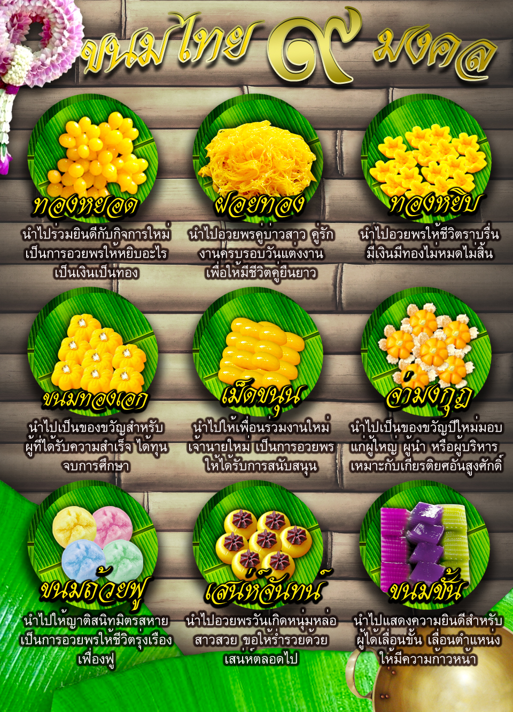

ประวัติขนมไทย
ขนมไทย เป็นของหวานที่ทำและรับประทานกันในอาณาจักรไทย มีเอกลักษณ์ด้านวัฒนธรรมประจำชาติไทยคือ มีความละเอียดอ่อนประณีตในการเลือกสรรวัตถุดิบ วิธีการทำ ที่พิถีพิถัน รสชาติอร่อยหอมหวาน สีสันสวยงาม รูปลักษณ์ชวนรับประทาน ตลอดจนกรรมวิธีการรับประทานที่ปราณีตบรรจงของขนมแต่ละชนิด ซึ่งยังแตกต่างกันไปตามลักษณะของขนมชนิดนั้นๆ
| ขนมไทยมงคลทีสุด | ขนมที่หาทานยากที่สุด | ขนมไทยที่นิยมที่สุด |
|---|---|---|
| ขนมทองหยิบ | ขนมบุหลันดั้นเมฆ | ขนมสอดไส้ |
- ขนม หมายถึง
- ของกินที่ไม่ใช่กับข้าว มักมีรสหวาน ปรุงจากแป้ง หรือข้าวผสมกับน้ำตาล บางชนิดมีกะทิ, ของหวาน ก็เรียก
- ตัวอย่างขนมไทย
ตัวอย่างขนมไทย

ตัวอย่างขนมไทย

ตัวอย่างขนมไทย

เพลงที่ชอบ